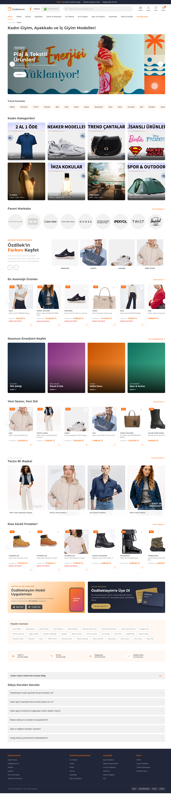

Kadın Hub
Sayfa Stratejisi
Rakip Analizi · Yapısal Öneri · Mockup · Roadmap

AKIŞI
Hub sayfa stratejisi 5 bölümde değerlendirilmektedir. Süreç boyunca veri-temelli içgörüler ve rakip karşılaştırmaları temel alınmıştır.
/kadin2 sayfası neden hub değil, mevcut SEO eksiklikleri
Boyner · Amazon TR · Koton · Marks & Spencer karşılaştırması
16 bölümlü hibrit yaklaşım, component breakdown
Tarzın Bi' Başka, Split Showcase, Club/App promosyonu
Beklenen kazançlar, implementasyon takvimi
Mevcut Durum
/kadin2 sayfasının hub potansiyeli ve eksiklikleri
Hub değil, doğrudan PLP
www.ozdilekteyim.com/magaza/kadin2 sayfası bir kategori hub'ı yerine doğrudan ürün listeleme sayfası olarak çalışmaktadır. Kullanıcı keşif deneyimi ve SEO katmanları eksik durumdadır.
14.800 ürün · 411 sayfa · 54 facet
H1: "Kadın"
Tek kelime, alıntı içinde. Long-tail SEO sinyali vermemektedir.
Breadcrumb duplicate
"Ana Sayfa > Kadın > Kadın" — son seviye tekrarlanmaktadır.
SEO içerik yok
Açıklayıcı paragraf, alt başlık, ilgili kategori linki bulunmamaktadır.
FAQ ve loyalty yok
FAQPage schema'sı eksik. Üyelik / app yönlendirmesi bulunmamaktadır.
- Mevcut /kadin2 sayfasında 3 schema tanımlı (BreadcrumbList + ItemList + WebPage) — rakiplerin çoğunda hiç JSON-LD yoktur.
- H2 başlıklarının tamamı filtre etiketi (Cinsiyet, Markalar, Bedenler) olup semantic SEO için elverişsizdir.
Rakip Analizi
4 rakip kadın hub sayfasının yapısal ve SEO karşılaştırması
4 Rakipte hub yapısı ve SEO sinyalleri
Boyner, Amazon TR, Koton ve Marks & Spencer kadın hub sayfalarının yapısal componentler, internal link katmanı ve schema markup açısından karşılaştırılması.
| Özellik | Özdilek | Boyner | Amazon TR | Koton | M&S TR |
|---|---|---|---|---|---|
| Hub var mı? | PLP | ✓ | PLP | PLP | ✓ |
| Long-tail H1 | ✗ | ✗ | ✗ | ✓ | ✗ |
| JSON-LD Schema | 3 | 0 | 0 | 0 | 0 |
| SEO içerik (kelime) | 0 | ~500 | 0 | ~2K | 0 |
| Popüler aramalar | ✗ | 30+ | ✗ | ✗ | ✗ |
| Marka logo grid | ✗ | kısmi | 50+ | ✗ | 3 |
| FAQ + Schema | ✗ | ✗ | ✗ | ✗ | ✗ |
| Yatay ürün carousel | ✗ | ✗ | ✗ | grid | ✗ |
| Trust badge | footer | ✓ | ✗ | ✗ | ✓ |
- Özdilek schema markup'ta tek başına lider — rakiplerin hiçbirinde JSON-LD bulunmamaktadır.
- Koton'un long-tail H1 ve multi-silo içerik pattern'ı SEO etkisi açısından örnek alınabilir.
- Boyner'in popüler aramalar bloğu (30+ link) ve Amazon'un marka grid'i hub'da net SEO katmanı sağlamaktadır.
- FAQ + FAQPage schema hiçbir rakipte yoktur — Özdilek için pure moat fırsatıdır.
Her rakipten en iyi parçayı alarak hibrit yapı
Önerilen Özdilek hub yapısı, her rakipten test edilmiş bir pattern'ı entegre etmektedir. Sonuç: rakiplerin tek başına sahip olmadığı dengeli bir hibrit deneyim.
Boyner'den
Editorial stil koleksiyon kartları, popüler aramalar SEO link havuzu, "Tarzın Bi' Başka" 4 editorial kart pattern'ı.
Amazon TR'den
50+ marka logo grid, "Fiyata göre alışveriş" kategori-segment tile'ları, görsel-yoğun discovery layout.
Koton'dan
Long-tail H1, 2.000+ kelime multi-silo SEO content, marka-özel filtre taksonomisi.
M&S'ten
Editorial büyük hero, alt-marka koleksiyon vitrini, minimal premium hissiyat, trust badge row.
+ Özdilek'in kendi gücü: JSON-LD schema yoğunluğu
Mevcut 3 schema (BreadcrumbList + ItemList + WebPage) korunmakta; hub için CollectionPage + FAQPage eklenerek 5 schema'ya çıkarılması önerilmektedir.
Önerilen Yapı
16 bölümlü hibrit hub mimarisi, yukarıdan aşağıya akış
Hub sayfa akışı
Yukarıdan aşağıya kullanıcı akışı: keşif → ürün → kampanya → SEO katmanı. Her bölüm bir SEO ve UX hedefine hizmet etmektedir.
- Üst: hızlı keşif + kategori
Bölüm 1-7 - Orta: ürün vitrini + kampanya
Bölüm 8-13 - Alt: SEO + güven katmanı
Bölüm 14-16
4 yeni component
Mevcut /kadin2'de olmayan, rakiplerin parça parça uyguladığı kazanım componentleri. Tümü bu hub'da konsolide edilmektedir.
Pattern referansları rakip incelemelerinden çıkarılmış, Özdilek tasarım diline (Montserrat, #ff6c0c) uyarlanmıştır.
Tarzın Bi' Başka!
4'lü editorial kart bloğu — kategori + fiyat ipucu (599 TL'den, %50 indirim vb.). Boyner pattern'ı baz alınarak Özdilek copy ile.
Split Showcase
Sol metin + sağ yatay carousel. "Özdilek'in Farkını Keşfet" hedefli sayfalar için. Derimod pattern'ı.
Loyalty Block
2 sütun: Mobil Uygulama (App Store / Google Play badge'leri) + Özdilekteyim Club (üyelik CTA). Mevcut sitede yok.
Popüler Aramalar
25–40 long-tail keyword link havuzu. Boyner pattern'ı; SEO katmanı için kritik internal linking.

Mockup canlı
Self-contained HTML, Özdilek tasarım diline uygun (Montserrat + #ff6c0c). 45 görsel base64 inline. Responsive (desktop + mobile).
GitHub Repository
github.com/erdogan1ozdemir/
ozdilek-hub-kadin-anasayfa-ornek
- Header / footer / tema birebir Özdilek (gerçek logo SVG + Mağaza-Market switch).
- Etkileşim: hero slider, scroll-snap carousel, FAQ accordion, mobil drawer.
- Schema: CollectionPage + BreadcrumbList + FAQPage inline JSON-LD.
SEO Etkisi & Roadmap
Beklenen kazanımlar ve uygulama takvimi
Beklenen SEO etkisi
Hub sayfası canlıya alındıktan sonra ilk 3-6 ay içinde gözlemlenmesi beklenen kazanımlar. Tahminler Koton ve Boyner benchmarks'larından türetilmiştir.
(3 → 5)
Link / Hub
Trafik Artışı (6 ay)
Şu an eklenecek schema'lar
- CollectionPage — hub sayfası temel tipi, Google için rich result sinyali.
- FAQPage — 6 SSS, SERP'te accordion görünümü potansiyeli (rakiplerde yok).
- BreadcrumbList genişletilmiş — 2 → 3 seviye, duplicate düzeltilmiş.
Kazanım hipotezleri
- "Kadın giyim" benzeri primary keyword'lerde sıralama iyileşmesi beklenmektedir.
- 30+ long-tail link ile alt kategori PLP'lerde indirect ranking boost.
- FAQ schema rakipte olmadığı için SERP feature kazanımı olasıdır.
Hub sayfası uygulama takvimi
Önerilen 4 fazlı implementasyon. Toplam tahmini süre: 8-10 hafta. Faz 4 (diğer hub'lara genişleme) sonraki çeyrekte değerlendirilebilir.
Tasarım & Spec
2 hafta · Final Figma, design tokens, Spartacus component spec
Frontend Dev
3-4 hafta · Spartacus / Angular bileşenler, CMS slot entegrasyonu
Content & Schema
2 hafta · SEO copy, FAQ, asset üretimi, JSON-LD entegrasyonu
Launch & Genişle
1-2 hafta + sonra · Deploy, measure, Erkek/Çocuk hub'larına replikasyon
SEO spec · içerik · schema · UX rehberi
Görsel asset · marka onayı · CMS slot içeriği
Spartacus dev · deploy · QA
Teşekkürler
Sorularınız ve geri bildirimleriniz için hazırız.
Sonraki adım: tasarım onayı + faz 1 başlangıcı.